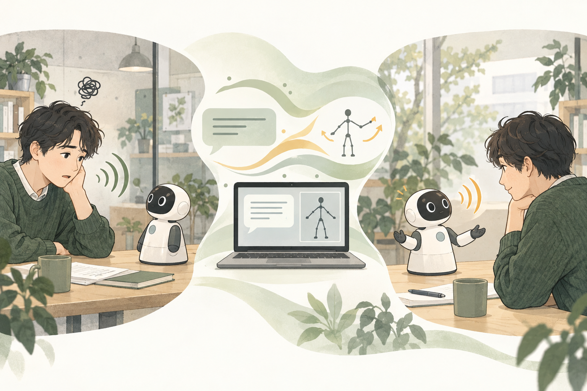

Example input
“I struggled with my presentation today and feel a little down.”
Verified path: text, actual dialogue history and explicit language. Audio/image input exists in the foundation but remains unverified through the latest body integration.
HUMAN–ROBOT INTERACTION · 2026.09.14
Can behavior learned from human motion make conversation with a small robot feel more approachable and understanding?
01 / INPUT → OUTPUT

“I struggled with my presentation today and feel a little down.”
Verified path: text, actual dialogue history and explicit language. Audio/image input exists in the foundation but remains unverified through the latest body integration.
Reply text, Qwen-native speech and a30 Hz motion sequence. These currently play together in a browser schematic. Physical execution requires joint mapping and controller output.
The pictured head/arm gestures are illustrative, not guaranteed semantic behaviors.
Intended scenarios are short everyday exchanges: disappointment after a presentation, satisfaction after finishing work, or plans for tomorrow. No clinical or counselling effect is claimed.
02 / ARCHITECTURE
Text + language ja/en
Reply text + completed reply audio
4-second windows →52×2048 features
Noise + audio + previous30 frames →50 steps
Japanese120D / English Trinity150D →30 Hz
Original audio clock drives movement frames
Green: updated during body training · Blue: frozen during integration training · No weights update during inference
Qwen and the body model stay in one resident worker, joined by reply identity and exact audio hashes. The existing audio encoder is reused to avoid duplicate GPU loading. Stages execute sequentially within a request, then speech and movement play together.
A width256,12-block shared lineage uses source-specific input/output projections and motion codecs. The adopted v5 has14,055,926 trainable body parameters; this is not the total including Qwen.
| Distinction | Current implementation |
|---|---|
| Dialogue history | Previous utterances and actual Qwen replies feed the next turn |
| Motion history | Use the previous generated30-frame suffix within a reply; reset across replies |
| Semantic input to movement | Adopted live path conditions on reply-audio features; direct reply-text conditioning is not adopted |
| English and Japanese | Separate output routes in a shared model; no invented joints to hide rig differences |
| Generation timing | Completed audio → features → body generation → synchronized playback; streaming body generation during speech synthesis is not implemented |
Japanese/ZEGGS predict latent dynamics; Trinity predicts pose and dynamics. Training combines diffusion prediction loss with decoded-motion objectives through frozen decoders. Generated histories are conditions, never replacement teachers. Statistics use fitting splits; Qwen, the original English route and codecs remain frozen during continuation.
Trinity8k→16k continuation: batches32 Japanese,16 ZEGGS,16 Trinity; source weights1:0.25:0.25. Existing AdamW states are restored; only10 new Trinity tensors start with empty optimizer state. Generated-history mixture0.5, audio/history dropout0.1. These describe the executed lineage, not a new ongoing training run.
03 / PROTOTYPES & DECISIONS
Established the UI/Qwen interface. Early authored motion teachers checked integration, not human-motion learning.
BEAT2 English/Japanese comparisons and separate GENEA prototypes. Capacity and temporal objectives were explored; velocity, direction and language tradeoffs remained.
Added a Japanese120D route without inventing missing spine joints, plus a codec and generated-history conditioning.
Added ZEGGS styles and an explicit-pose Trinity route; continued to16k with full model/optimizer provenance.
Compared rotation composition, denoised losses, histories and content conditioning. Better isolated scores did not override poor seams, dynamics or response evidence.
Used retained full-v5 for actual reply audio→body→synchronized playback, prioritizing a feasible short Sota experiment over human-level fidelity.
Selected generation-error milestones on the same development sets: Japanese267 windows/102 recordings; ZEGGS582/21. Recordings receive equal weight. Lower is closer to recorded motion, not a naturalness or empathy score.
| Milestone | Japanese MSE | ZEGGS MSE |
|---|---|---|
| Shared 4k | 0.01941536 | 0.02960559 |
| Style/history 8k | 0.01859767 | 0.02654811 |
| Control 16k | 0.01770262 | 0.02553956 |
| Trinity v5 16k | 0.01784950 | 0.02589612 |
4k→8k also changes history/style conditioning: this is not a single-factor training curve. The16k control/v5 comparison adds Trinity; Japanese error increases about0.83% and ZEGGS about1.40%. Expansion did not improve every metric.
04 / DATA LINEAGE
The three native sources in adopted v5 body learning provide6,056 four-second windows: nominally6 h43 m44 s. This is not multiplied by repeated optimizer draws and excludes Qwen foundation pretraining.
| Dataset / role | Fit windows | Development / QC | Scope | Use and limits |
|---|---|---|---|---|
| Japanese author-released BVH/WAV | 2,126 | 267 | 770 /102 recordings | Adopted Japanese route; a separate archive from BEAT2 Japanese. Treated as single-speaker development data. |
| ZEGGS | 1,366 | 582 | 46 /21 recordings | Used in shared body training.18 fitting styles out of19; style count is not speaker count. |
| Trinity II | 2,564 | 1,389 | 12 /6 recordings | Adopted English reply route; day-based development split with the same source speaker. |
| BEAT2 English, inherited | 4,613 | 3,379 | Inherited English route frozen | Body-pretraining lineage; not added to the newly optimized three-source window count in v5 continuation. |
| GENEA2023, separate prototypes | 11,982 | 4,506 | Both interlocutor channels | Used in dialogue/content/history training prototypes, separate from the adopted live v5 path. |
| BEAT2 Chinese, deferred | Not trained | 734 prepared windows | 84 acquired pairs;66 windowed recordings | Acquisition, rotations and audio features checked; not trained under the Japanese/English priority. |
| Seamless Interaction | Not used in adopted model | Clock/pose QC on38 pairs | Selected-source quality review | Investigated as interaction data; acquired amount is not equated with training exposure. |
Japanese archive:1,047 pairs,1,038 retained recordings after identity/clock checks;2,618 candidate windows minus225 exclusions gives2,393 (2,126 fit/267 development). ZEGGS:67 recordings and1,948 admitted windows. Trinity II:19 acquired pairs,18 admitted recordings and3,953 windows.
GENEA’s nominal18.32 hours count both role channels, not18.32 hours of independent conversation. Full speaker/content/session independence across datasets is unestablished. These are development records, not untouched test results.
This is a selected inventory of adopted lineage and major exploration pools, not every historical experiment (including early BEAT2-Japanese adaptation and small integration fixtures). Recordings, windows and speakers are distinct counts.
05 / END-TO-END SOFTWARE EVIDENCE
| Turn | Frames | Service completion | Browser audio progress |
|---|---|---|---|
| JA01 | 132 | 1.62 s | 2.09 s |
| JA02 | 146 | 1.72 s | 2.18 s |
| EN01 | 216 | 2.51 s | 3.04 s |
| EN02 | 182 | 2.16 s | 2.55 s |
Four-turn check after initialization and bilingual warmup; startup readiness took about273 s. Playback uses completed WAVs. These are not first speech-chunk generation or physical motor latency measurements, nor evidence of superiority or real-time joint generation.
Exact original audio/body hashes, actual previous-reply history, audio-clock frame selection, end-of-playback and preservation of failure records.
Physical Sota joint control, speaker/motor synchronization, reliable semantic motion fit, sufficient naturalness/diversity, and perceived affinity/empathy.
06 / RESEARCH CONTRIBUTION
The intended contribution is not a world-first speech/motion generator, fastest latency or highest realism. It is learned human-motion transfer integrated with Japanese/English dialogue, its expression on Sota, and evaluation of how people experience it.
| Aspect | Current position | Evidence still needed |
|---|---|---|
| Integrated generation | Sequential processing in one resident worker | Simultaneous generation / causal streaming is a separate unimplemented task |
| Latency | About2–3 s in four warm examples | Physical latency distribution, failure rate and matched comparison |
| Realism | Quality sufficient for a short robot experiment | Physical playback and human judgments |
| Benefit of learning | Static control prepared to test motion presence | Moving procedural baseline to test a method advantage |
| HRI contribution | Affinity, felt understanding and willingness to continue are hypotheses | Pilot and independent evaluation with a frozen protocol |
Motion-Omni reports motion from speech-producing hidden states. Our current system feeds completed audio to a body model, so these are different meanings of integration. Distinctions and any advantage require implementation comparison and evaluation. Motion-Omni ↗
07 / NEXT STEPS
Discuss borrowing with the professor; inspect the SDK, connection and joint conventions.
Compare learned movement and an initial-pose hold with identical speech; record expression, synchronization and failures.
Specify a moving baseline, measures, participants, topics and order. Further learning should address a concrete obstacle to the experiment.
08 / SOURCES & RIGHTS
Roles are explicit. Related architecture does not imply that its weights or code were adopted. The table above reports project usage rather than total published corpus size.
Foundation for dialogue, audiovisual understanding and speech; not evidence of our joint body training.
Actual quantized deployment; the foundation model was not trained by this project.
Runtime infrastructure for resident multimodal inference.
Author-linked speech/motion archive used for our Japanese120D teachers; related representation-learning work.
Author implementation linking the Japanese data; this does not mean its complete model was adopted.
BEAT2 source paper for English body pretraining and earlier experiments; not a reproduction of the full EMAGE architecture.
Release used in early English/Japanese comparisons and Chinese acquisition/QC; corpus size differs from project usage.
Expressive speech/motion data and related method; performance styles are not empathy labels.
Primary release and terms; no third-party data is redistributed on this site.
Selected Trinity II subset used here; distinguished from Trinity I.
Author paper associated with Trinity II.
Monadic/dyadic gesture evaluation; used in separate dialogue-conditioning prototypes and evaluation planning.
Interaction data acquisition/QC; no claim of training the adopted live model on it.
Basis for6D rotation representations:120D=20 joints×6,150D=25 joints×6.
Related motion-diffusion architecture; no MDM reproduction or benchmark claim here.
Background for deterministic iterative reverse diffusion; the current implementation uses50 fixed steps.
Close joint speech/motion work using speech-producing hidden states; distinct from our current completed-audio cascade.
Prior Sota expression/impression study; its results are not outcomes of this project.
Platform information; not a substitute for laboratory-unit configuration or calibration.
© 2026 Emotion Bridge contributors, to the extent rights subsist in original text/layout. Scenario illustration generated with OpenAI image generation, not an experiment record. Third-party models, data, papers and names retain their respective rights and terms. Attribution is not redistribution permission. No original datasets, weights, paper PDFs/figures or participant materials are included.